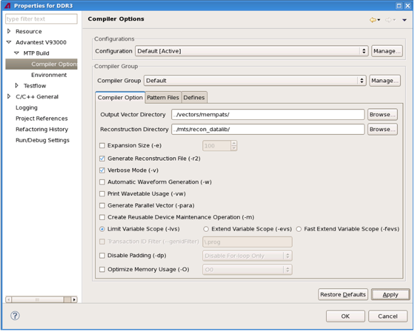

The Compiler Options page
The Compiler Options page enables you to set up different compiler options for different sets of .apg files in a specific build configuration.
The following picture shows the Compiler Options page:

The items on this page are:
- Configuration: Lets you select a build configuration.
If you have not created a build configuration, create it with Manage... next to Configuration or with Manage... on the MTP Build page.
- Compiler Group and Manage...: Lets you create
different compiler groups for the build configuration specified in the
Configuration field.
The default compiler group is Default which you cannot rename or delete.
You must assign dedicated .apg files, compiler options, and string macros to each compiler group by using the following tabs.
- Compiler Option: This tab lets you set up the compiler options for the
compiler group specified in the Compiler Group field.
For compiler options on this tab, see MTL compiler options.
- Pattern Files: This tab lets you add or remove .apg files from the
compiler group specified in the Compiler Group field.
- By using Change Group on this tab, you can move the selected .apg files to another compiler group in the same build configuration.
- By using Exclude on this tab, you can exclude the selected .apg
files from the compiler group as well as the related build configuration. The excluded files
will be greyed out.
To include these files back, select them and click Include on this tab.
The .apg files which you have added, removed, changed group, or excluded/included will take effect on the Pattern Files tab on the MTP Build page.
- Defines: This tab lets you create, edit and delete the string macros and their values which are used by the MTL :defines: keyword for the compiler group specified in the Compiler Group field.
Functional changes
- Introduced in MTP 3.2.1